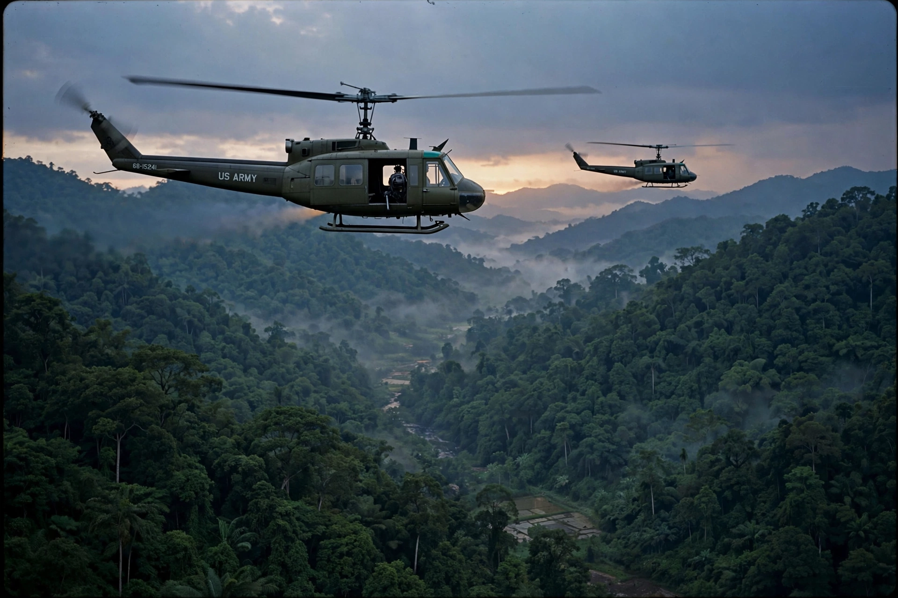

| Date | 1 November 1955 – 30 April 1975 |
|---|---|
| Location | South Vietnam, North Vietnam, Cambodia, Laos |
| Result | North Vietnamese and Viet Cong/PRG victory; reunification of Vietnam under a communist government |
| Belligerents | South Vietnam, United States, South Korea, Australia, Philippines and allies vs. North Vietnam, Viet Cong, Khmer Rouge, Pathet Lao and allies |
| US troops | Peak strength 543,000 (April 1969) |

The Vietnam War was a conflict in Vietnam, Laos and Cambodia from 1955 (with the main phase of American involvement from the mid-1960s) to the fall of Saigon on 30 April 1975. It pitted North Vietnam, supported by the Soviet Union, China and other communist states, against South Vietnam, supported principally by the United States. It was the second of the Indochina Wars and a defining proxy conflict of the Cold War.
Vietnam had been part of French Indochina. After the First Indochina War, the 1954 Geneva Accords temporarily divided the country at the 17th parallel: Ho Chi Minh's communist government in the north and an anti-communist state in the south. Elections intended to reunify the country were never held. In the south, the communist-led National Liberation Front — the Viet Cong — launched an insurgency against the government of Ngo Dinh Diem and his successors, supplied through the Ho Chi Minh trail running through Laos and Cambodia.
Washington's commitment grew from advisers under Presidents Eisenhower and Kennedy to open war after the Gulf of Tonkin Resolution of 1964. Under President Lyndon B. Johnson the US pursued a strategy of attrition: heavy bombing (Operation Rolling Thunder), search-and-destroy operations, and a troop build-up exceeding half a million men. The 1968 Tet Offensive, although a military defeat for the attackers, shattered American confidence that victory was near and turned US public opinion decisively against the war.
President Richard Nixon pursued "Vietnamization" — shifting combat to South Vietnamese forces while expanding the air war into Cambodia and Laos. The Paris Peace Accords of January 1973 withdrew the remaining US combat troops. Fighting between the Vietnamese parties continued until the North's 1975 spring offensive captured Saigon, which was renamed Ho Chi Minh City; Vietnam was formally reunified in 1976.
Death toll estimates range up to three million Vietnamese and more than 58,000 American service members. The war devastated Vietnam's countryside — including through the herbicide Agent Orange — destabilised Cambodia, where the Khmer Rouge seized power, and drove millions of refugees to flee by boat. In the United States it produced a lasting political trauma, mass protest movements, and reforms such as the War Powers Resolution of 1973.